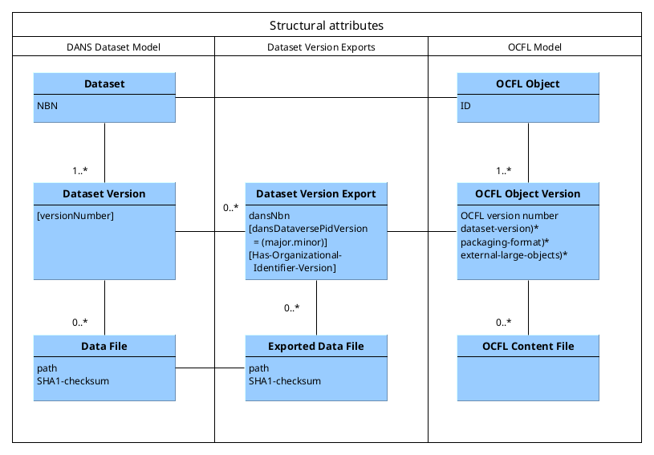

Data Vault Storage Root¶
Introduction¶
The Data Vault is subdivided into Storage Roots, containing the long-term preservation copies for Data Stations and "Vault as a Service" (VaaS) customers. The Data Vault Storage Root (DVSR) can be viewed as a type of interface, or exchange format, albeit an atypical one, as it is aimed at future users, rather than current ones.
dd-data-vault interface
Do not confuse the DVSR with the service interface of dd-data-vault, which is an internal microservice interface that is used by the transfer service to store data in the Data Vault.
OCFL repositories¶
The DANS Data Vault is implemented as an array of OCFL repositories. OCFL stands for Oxford Common File Layout. It is a community specification for the layout of a repository that stores versioned digital objects. Each repository, or "storage root," is one Data Vault Storage Root (DVSR). The Data Stations each have their own DVSR as does each customer of the Vault as a Service.
Extensions¶
OCFL can be extended with additional metadata and functionality. The DANS Data Vault uses the following extensions:
- Object Version Properties - This extension defines a way to specify custom properties for each version of an object.
- Property Registry - This extension defines a registry for properties that can be used in the Object Version Properties extension.
- OCFL Packaging Format Registry - This extension defines a list of packaging formats. Packging formats specify the internal structure of an archived dataset version export.
Dataset model mapping¶
OCFL has a generic object model. It does not define the concept of a dataset. The DANS archival systems (Data Stations and Vault as a Service), on the other hand, are built around the dataset concept. It is essential that the datasets stored in the Vault can be reconstructed from the OCFL objects. For this purpose this section documents the mapping between the two models.
Basic mapping scheme¶
The basic mapping scheme is concerned with reconstructing datasets and their version histories from OCFL objects.
| DANS dataset model | OCFL model | Multiplicity |
|---|---|---|
| Dataset | OCFL Object | 1-to-1 |
| Dataset Version | OCFL Object Version | 1-to-1..* |
A Dataset corresponds to one OCFL Object. Each OCFL Object Version stores one Data Version Export (DVE). A DVE is a package containing all the data files and metadata of the Dataset Version at the time of export. The structure and metadata schemas of the DVE are documented in a "packaging format" specification.
Data Files and OCFL Content Files
Data Files and OCFL Content Files have been left out of the table above because it is the packaging format that defines the exact way a Data File is stored. Also, some metadata may be stored as OCFL Content Files, so there is not necessarily a 1-to-1 mapping between a Data File and an OCFL Content File.
BagPack
The current packaging format is called BagPack. It is a recommendation by the Research Data Alliance (RDA) and is implemented as an export/import format by Dataverse. For VaaS, DANS has implemented BagPack to closely resemble the Dataverse implementation.
One Dataset Version may be exported multiple times (see below for an example). Therefore, there is a 1-to-n mapping between a Dataset Version and an OCFL Object Version, with n > 0.
A multiple exports scenario
A scenario where a dataset version is exported multiple times is when the dataset was updated in the Data Station without creating a new version. This can be done by a superuser and is known as "updatecurrent". A new Dataset Version Export will be created and therefore a new OCFL Object Version will be created as well. The Data Station version history, however, will not display an additional version.
Structural attributes¶
The following diagram gives an overview of the structural attributes and how they are mapped to the OCFL model.

Key to the columns:
- DANS Dataset Model: how DANS conceptualizes datasets. This includes both Dataverse and VaaS datasets.
- Dataset Version Exports: the relevant properties of the exported dataset versions.
- OCFL Model: how OCFL conceptualizes objects and their versions. Note that the attributes marked with
)*are custom version properties defined using the Object Version Properties extension.
The following table describes the classes and their attributes in more detail.
DANS Dataset Model¶
| Class | Attribute | Description |
|---|---|---|
| Dataset | NBN | The URN:NBN that uniquely identifies the dataset in the Vault. This identifier is assigned by DANS. |
| Dataset Version | versionNumber | A number or other identifier that records the version. In Dataverse this is a major.minor version number. For VaaS clients this can be anything and can even be omitted. |
| Data File | path | The path relative to the dataset root. |
| Data File | SHA1-checksum | The SHA1 checksum of the data file. |
Dataset Version Export¶
| Class | Attribute | Description |
|---|---|---|
| Dataset Version Export | dansNbn | The URN:NBN that uniquely identifies the parent dataset in the Vault |
| Dataset Version Export | dansDataversePidVersion | The version number of the dataset as assigned by Dataverse (see versionNumber); not applicable for VaaS DVEs |
| Dataset Version Export | Has-Organizational-Identifier-Version | A version number or other version identifier assigned by the VaaS client. (see versionNumber) |
| Exported Data File | path | The path relative to the dataset root. |
| Exported Data File | SHA1-checksum | The SHA1 checksum of the data file. |
OCFL Model¶
| Class | Attribute | Description |
|---|---|---|
| OCFL Object | ID | The OCFL object identifier. |
| OCFL Object Version | OCFL version number | The OCFL version number. This is an integer starting from 1 and incremented by one for each version |
| OCFL Object Version | dataset-version | Custom version property that contains the value of either dansDataversePidVersion or Has-Organizational-Identifier-Version |
| OCFL Object Version | packaging-format | Custom version property that documents what specification the internal structure of this object version conforms to. |
| OCFL Object Version | external-large-objects | An optional list of SHA-1 checksums of external large object (see remarks below) |
Remarks¶
versionNumberis optional for VaaS clients. However, not providing a value forversionNumber(throughHas-Organizational-Identifier-Version) means that it may be harder to correctly restore the version history later.- For practical reasons DVEs are limited in size. (Currently, a maximum of 5G is used.) Any files above the cut-off limit are included through external
references. The way this is done is defined by the packaging format. For example, DANS RDA BagPack Profile declares that the bag may contain a BagIt
fetch.txtfile to specify what files are missing, where to download them from and where to store them in the bag. To preserve these external dependencies for the long term, they are stored in a companion LOB-store. This is a sibling directory of the Data Vault Storage Root with the same name + the extenion.lobs, e.g.,archaeology.lobs.
Restoring datasets from the OCFL Storage Root¶
By restoring a dataset we mean:
- retrieving its versions in the correct order and;
- for each version getting all the files and their dataset-relative filepath.
The process is as follows:
- Retrieve the OCFL-object with all its versions by URN:NBN.
- Determine the
dataset-versionproperty for each object version. - If there are multiple candidates for a version, choose the one with the highest OCFL version number, unless there is a specific reason to use an older export.
- Retrieve the DVE from the content of each object version. The packaging format then determines how to extract the files and their dataset-relative filepaths.
Serialization in layers¶
OCFL repositories can be serialized in different ways, for example, as a directory structure on a file system, or as objects in an object store. The DANS Data Vault uses the SURF Data Archive tape storage. The tape storage system that is used by Data Archive organizes files in a file-folder structure, so in principle serialization should be the same as to a disk-based files system, from OCFL's perspective. However, the tape storage system requires a minimum file size of 1GB, which is much larger than the typical data file stored in the DANS Data Vault. To meet this requirement, the OCFL repositories are stored as a series of DMFTAR archives, each of which is larger than 1GB. Each archive forms a layer. For a more detailed description of the layers, see the documentation of dans-layer-store-lib.
To restore the OCFL repository, the layers must be extracted in the correct order. SURF provides a utility called dmftar to create and extract DMFTAR archives. This utility is the interface to the tape storage system.
Restoring without the dmftar utility
Even without the dmftar utility, it is possible to restore the OCFL repository, as long as the layers are extracted in the correct order. A DMFTAR archive
is just a lightweight wrapper around a TAR archive, implemented as a directory containing batches of (possibly multi-volume) TAR files along with index
files and a checksum file.